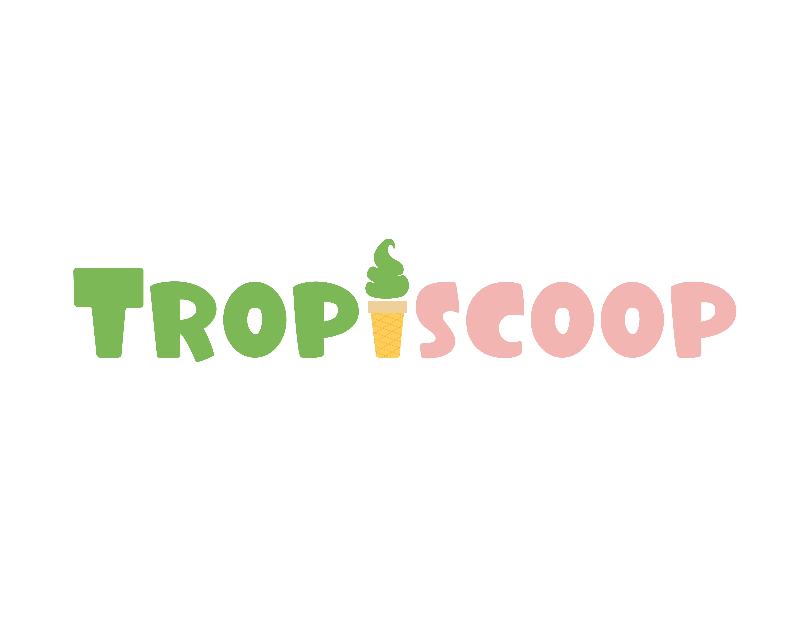
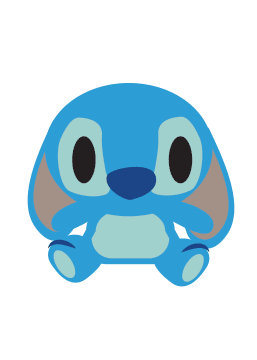

Ariellie's Place
Home
About Me
Designs
Personal Projects
I recently worked on...
Design Career Fair
Located at UC Davis

Tropiscoop
My brand in a package design class

My Personal Archive
I coded an interface